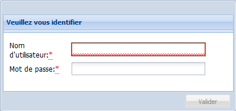

Connexion
ProcédureSe connecter à l'application Ginco⚓
Depuis votre navigateur internet, connectez-vous à l'adresse fournie par l'administrateur de votre application Ginco.
La boîte de dialogue
Veuillez vous identifiers'affiche.
Saisissez vos identifiants de connexion (
Nom d'utilisateuretMot de passe), puis cliquez surValider.RemarqueAuthentification locale ou centralisée (LDAP)⚓
Type d'authentification
Identifiants de l'utilisateur
Authentification locale
Définis dans Ginco et fournis par l'administrateur de l'application.
Authentification centralisée
Identiques à ceux définis dans l'annuaire LDAP (identifiants habituels).
L'authentification centralisée n'est disponible que dans le cas où un annuaire LDAP a été préalablement connecté à Ginco par l'administrateur de l'application.
Vous êtes connecté à Ginco ; l'interface de l'application s'affiche.